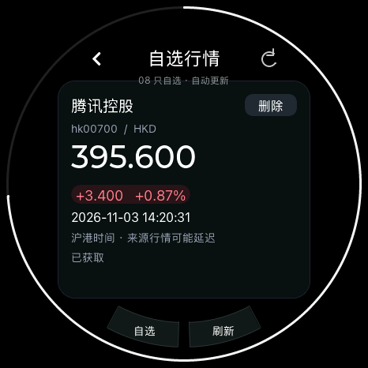
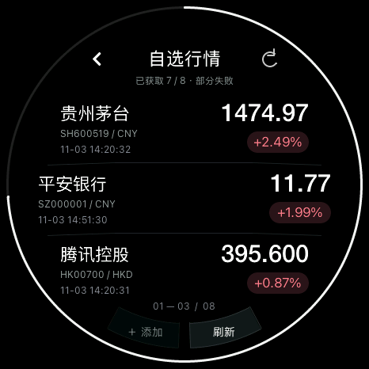

soRound OS
sobigrice / 开源小圆屏
05 / 自选行情 · 让信息说清楚
开发进展 · 2026.11
价格要看，
时间和状态也要看。
看清是哪只、什么币种、什么时候的报价。

单只详情 / 来源时间

查询失败 / 保留旧行情
整份自选自动刷新
屏幕外的股票，也会一起查询。
单只失败，单独标记
保留上次报价和时间，不把旧数据当新行情。
自己添加，也能移出
先选市场，再输入股票代码。